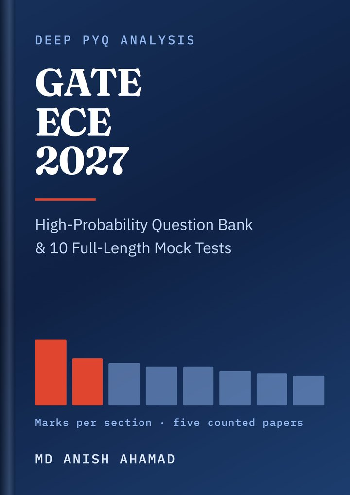
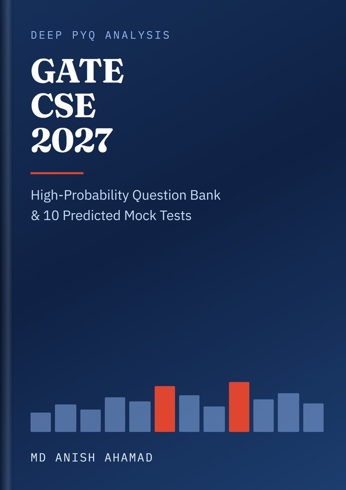

GATE preparation built from the papers, not from a syllabus list
Every GATE Guide book is written by counting real question papers, one question at a time. Two are out — GATE CSE 2027 and GATE ECE 2027 — and 58 free guides cover the syllabus, the topics and the strategy for nothing at all.


2 books · 2027 ₹250We count the papers. Then we write the book.
The organisers have never published a marks breakdown, so every weightage table you have seen is somebody's count of a past paper — and when those counts are checked against the papers, they do not hold. So we do the counting ourselves, in the open, and show the working.
Real GATE papers are read one question at a time. Each question is assigned to a section and a topic, and every assignment is checked against that year's official answer key — 65 questions, 100 marks, General Aptitude at exactly 15, or the count does not close.
The counts become a concept map with question numbers attached, so every claim names a year and a question you can go and check. Where a topic has never been asked, the book prints that too instead of inventing a history for it.
Every question is written for the book, never copied. Every number in it is computed rather than estimated, and every wrong option is the output of one specific mistake — which the solution names, so you learn what you did rather than only that you were wrong.
Nothing here is a guess dressed as a fact. Statements are labelled: what a paper contains, what the author reads in it, and what is a prediction about 2027.
Your branch, or the truth about when it will be ready
CSE and ECE are finished and on sale. The other four are written one at a time — each takes months of paper-by-paper work, so they are ordered by how many people ask for them. Tap a branch that is not ready and you can ask to be told the day it is.


GATE CSE 2027 — Deep PYQ Analysis & High-Probability Question Bank
- 27 years of GATE CS papers analysed topic by topic
- Every 2026 → 2027 syllabus change, checked against the official PDF
- Four confidence scores and the PYQ years behind every question
- 20-week roadmap, do-not-skip checklist and last-minute sheet

GATE ECE 2027 — Deep PYQ Analysis & High-Probability Question Bank
- Five GATE EC papers counted question by question against their official answer keys
- Because the published weightage tables do not survive checking — Section 16 shows the arithmetic
- Every 2026 → 2027 syllabus change mapped from the two official PDFs
- The 78 concepts that recur, ranked, with a 20-week plan and a last-minute sheet
Read 35 real pages before you buy
Thirty-five real pages of the GATE CSE 2027 book, unedited, so you can judge the quality yourself. No sign-up. The ECE preview is not out yet; its sales page shows the counted marks table in full instead.
- Title page and full contents
- Executive summary
- What changed in the 2027 syllabus
- Subject-wise weightage 2009–2026
- Operating System chapter sample with questions and four confidence scores
- Top 100 concepts: ranks 1–25
- Mock Test 01: first pages, answer key and worked solutions
- Last-minute revision sheet and diagram-based questions
Free GATE guides
58 free guides so far: 13 exam · 5 syllabus · 5 analysis · 22 subjects · 13 strategy.
Just published
A new edition every year
Each edition is rebuilt for the next exam: the latest paper added to the analysis, the new syllabus checked line by line, and fresh mock tests.
Daily GATE posts
Exam updates, syllabus notes and topic breakdowns on Instagram.
Questions about the book: WhatsApp +91 70339 35778 or contact us.